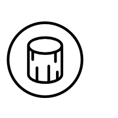

Stopwatch
History
Progress
{% if current_user.is_authenticated %}
Logout({{ current_user.username }})
{% else %}
Login
|
Register
{% endif %}
{% with messages = get_flashed_messages() %} {% if messages %}
{% for message in messages %}
{{ message }}
{% endfor %}
{% endif %} {% endwith %}
{% block main %}{% endblock %}